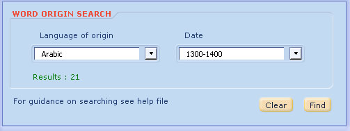

Open the word origin search function form the search menu. Use this function to find out which language a word originates from or which century it entered the English language. This example shows Arabic words that entered English in the 14th century. The results will open in a new window.

You can also see the word origins in the dictionary section.